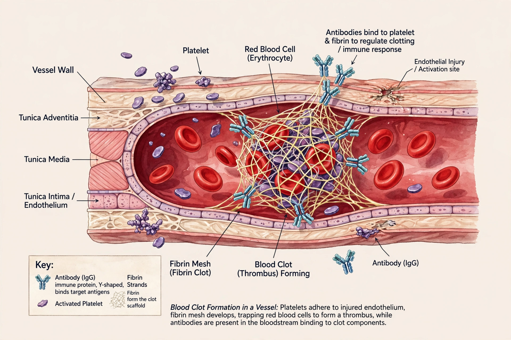

Antiphospholipid syndrome (APS) is an autoimmune, hypercoagulable state caused by antiphospholipid antibodies. It provokes blood clots (thrombosis) in both arteries and veins, as well as pregnancy-related complications such as miscarriage, stillbirth, preterm delivery, and severe preeclampsia. The syndrome occurs as a primary condition or secondary to another autoimmune disease, most often systemic lupus erythematosus.
Clinical manifestations include deep vein thrombosis, pulmonary embolism, stroke and other arterial thromboses, thrombocytopenia, livedo reticularis, and recurrent pregnancy loss. Diagnosis requires at least one clinical event together with persistently positive laboratory tests — lupus anticoagulant, anticardiolipin antibodies, or anti-β2-glycoprotein I antibodies — on two occasions at least 12 weeks apart (the revised Sapporo/Sydney criteria).
A rare, life-threatening variant, catastrophic antiphospholipid syndrome (CAPS or Asherson syndrome), involves rapid clotting in multiple organs over days, often triggered by infection or surgery, and carries a high mortality rate.
Management centres on anticoagulation. After a thrombotic event, patients are generally treated with warfarin, often long-term; direct oral anticoagulants are generally avoided in high-risk APS. Low-dose aspirin and heparin are used in pregnancy to improve outcomes. Hydroxychloroquine may be added in lupus-associated cases.